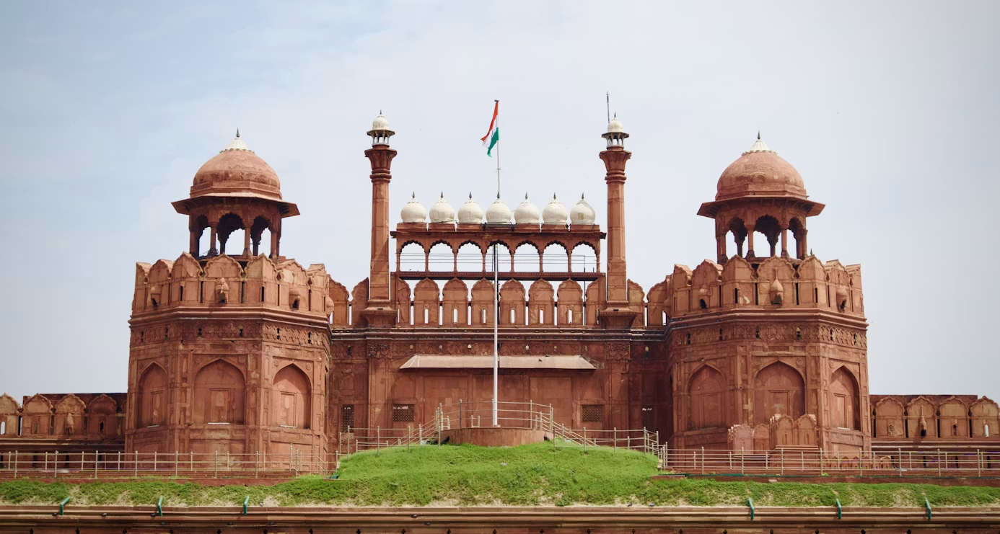
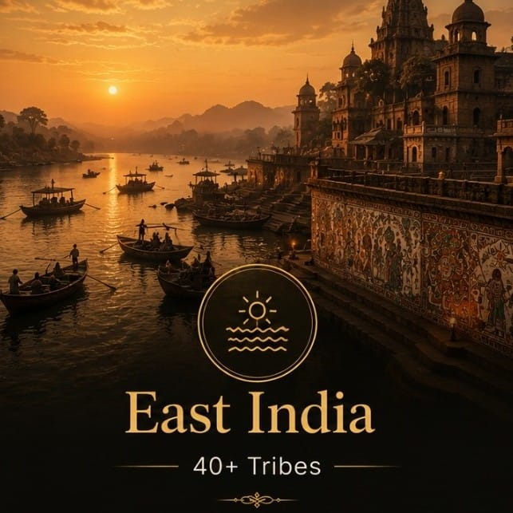

Third Battle of Panipat Explorer
On the plains of Panipat, the Maratha Confederacy's quest for supremacy over North India met its catastrophic end at the hands of Ahmad Shah Durrani's Afghan empire. With over 100,000 combatants and casualties numbering in the tens of thousands, it remains one of the largest single-day battles in human history — a turning point that shattered Maratha power and cleared the path for British colonial dominance.
A Battle That Changed the Fate of India
By the late 1750s, the Maratha Confederacy had become the dominant military power in the subcontinent, extending from the Deccan to the gates of Delhi. Their ambition to replace the Mughals as the hegemon of India led them north under Sadashivrao Bhau, commanding a massive army accompanied by thousands of civilians, families, and camp followers.
Arrayed against them was Ahmad Shah Durrani (Abdali), the founder of the Durrani Empire, who had been invited by Indian Muslim nobles — notably Najib-ud-Daulah and Shuja-ud-Daulah — to check Maratha expansion. What began as a strategic contest of maneuver and blockade culminated on 14 January 1761 in a colossal set-piece battle where artillery, cavalry, and disciplined infantry decided the destiny of a subcontinent.
🏛️ At a Glance
- 14 January 1761 (Makar Sankranti) — Fought on the plains of Panipat, Haryana.
- Afghan Victory — Durrani's forces decisively crushed the Maratha army.
- ~100,000+ Combatants — Among the largest single-day battles in history.
- Catastrophic Casualties — Estimated 40,000–70,000 dead in a single day.
- End of Maratha Hegemony — The Confederacy never recovered its northern dominance.
The Belligerents
Two coalition armies, each a patchwork of allies and vassals, met at Panipat. The Marathas fought for supremacy; the Afghans and their Indian allies fought for survival and faith.
Maratha Confederacy
- Commander — Sadashivrao Bhau (cousin of the Peshwa)
- Key Leaders — Vishwasrao (Peshwa's heir), Malhar Rao Holkar, Jankoji Shinde, Ibrahim Khan Gardi
- Strength — ~45,000–60,000 combatants; 200,000+ including non-combatants
- Artillery — 200+ guns, including French-trained Gardi corps under Ibrahim Khan
- Cavalry — ~30,000 light horsemen (Maratha, Pindari, Rohilla allies)
Durrani Afghan Empire & Allies
- Commander — Ahmad Shah Durrani (Abdali)
- Key Leaders — Najib-ud-Daulah (Rohilla), Shuja-ud-Daulah (Awadh), Hafiz Rahmat Khan
- Strength — ~40,000–55,000 combatants
- Artillery — ~70–80 guns, including heavy zamzama and swivel guns on camels
- Cavalry — ~40,000 heavy and light cavalry (Afghan, Rohilla, Mughal)
Why it mattered: This was not merely a clash of two armies but a collision of two imperial visions. The Marathas sought to inherit the Mughal mantle; the Afghans and their Indian Muslim allies saw the battle as a defensive jihad to preserve the old order. The outcome would determine whether India's future lay with a resurgent Hindu confederacy or a fracturing Mughal-Islamic polity — until a third power, the British East India Company, stepped into the vacuum.
Military Strategies & Tactics
The battle was a study in contrasting doctrines: Maratha offensive élan and French-style artillery versus Afghan defensive depth, mobile camel-mounted guns, and superior cavalry coordination.
Maratha Plan: The Grand Offensive
- Centralized Command — Sadashivrao Bhau attempted unified control over fractious sardars
- Artillery-First Doctrine — Ibrahim Khan Gardi's 200+ guns to shatter Afghan lines before cavalry charge
- Infantry Square — European-style disciplined infantry (Gardi musketeers) as anchor
- Decisive Charge — Maratha cavalry to exploit artillery-breached gaps
- Logistical Liability — Massive civilian camp (families, merchants, pilgrims) restricted mobility
Afghan Plan: Elastic Defence & Envelopment
- Defensive Depth — Entrenched lines with artillery protected by ditches and ramparts
- Camel Guns (Shutarnal) — Mobile swivel guns on camels outflanked Maratha artillery
- Cavalry Superiority — Afghan heavy horse and Rohilla light horse for flank attacks
- Feigned Retreat — Controlled withdrawals to draw Marathas into kill zones
- Unity of Command — Durrani's personal authority over diverse Afghan and Indian contingents
⚔️ The Decisive Moments
- Morning Artillery Duel — Gardi guns initially dominated, but Afghan camel guns infiltrated flanks and enfiladed Maratha lines.
- Vishwasrao's Death — The Peshwa's heir struck by a stray cannonball; Bhau dismounted to fight on foot, breaking command cohesion.
- Holkar & Shinde Flight — Key Maratha commanders withdrew early, triggering a cascade collapse.
- Afghan Envelopment — Durrani's reserves and Rohilla cavalry encircled the Maratha center.
- Massacre at Dusk — Afghan horsemen rode down fleeing Marathas; non-combatants slaughtered in the camp.
💀 The Human Cost
- Maratha Dead — ~30,000–40,000 combatants; key leaders (Vishwasrao, Sadashivrao Bhau, Jankoji Shinde, Ibrahim Khan Gardi) killed.
- Afghan & Allied Dead — ~15,000–20,000; heavy losses among Rohilla and Awadh contingents.
- Non-Combatants — Tens of thousands of Maratha camp followers (women, children, merchants, pilgrims) massacred or enslaved.
- Prisoners — ~22,000 Maratha soldiers captured; many executed, others sold into slavery.
- Single-Day Toll — Estimated 40,000–70,000 total dead, making it among the bloodiest days in military history.
The Demographic Catastrophe
The Third Battle of Panipat was not merely a military defeat but a demographic catastrophe for the Maratha Confederacy. An entire generation of leadership — the Peshwa's heir, the commander-in-chief, the artillery chief, and dozens of sardars — perished in a few hours. The psychological blow was equally severe: the Maratha aura of invincibility, built over a century of victories, was shattered.
For the Afghans, victory came at terrible cost. Ahmad Shah Durrani's army was so depleted that he could not consolidate his gains, withdrawing to Afghanistan within months. The battle exhausted both the great indigenous powers of North India, leaving a vacuum that the British East India Company — fresh from its victory at Buxar (1764) — would fill within a decade.
Historical Impact & Legacy
Panipat 1761 did not end Maratha power — but it ended their northern empire. The consequences rippled across decades, reshaping the political map of India.
Maratha Resurgence (The "Recovery")
Under Mahadji Shinde and Nana Phadnavis, the Marathas rebuilt their strength, recaptured Delhi (1771), and became the Mughal emperor's protectors — but never regained the offensive momentum lost at Panipat.
Afghan Withdrawal & Sikh Rise
Durrani's empire fragmented after his death (1772). The Sikhs, bloodied but unbroken at Panipat, filled the Punjab vacuum, eventually establishing the Sikh Empire under Ranjit Singh.
British Expansion Unopposed
With the Marathas crippled in the north and the Mughals reduced to puppets, the Company faced no serious indigenous rival after Buxar. Plassey (1757), Buxar (1764), and Panipat (1761) together cleared the path to 1818.
"Panipat" as Metaphor
The battle entered Indian consciousness as the ultimate tragedy of disunity. "Panipat" became shorthand for catastrophic defeat born of internal division — invoked in 1857, 1947, and modern political discourse.
📜 Why Panipat Still Matters
- End of Indigenous Hegemony — No Indian power after 1761 could claim suzerainty over the whole subcontinent.
- Lesson in Unity — Maratha disunity (Holkar/Shinde rivalry, Bhau's alienation of Jat/Rajput allies) proved fatal.
- Military Modernization — The Gardi corps showed the potential — and limits — of European-style drill without institutional depth.
- British Opportunity — Clive, Hastings, and Wellesley exploited the power vacuum Panipat created.
Chronology of the Third Battle of Panipat
From the Maratha northward advance to the Afghan withdrawal — the road to Panipat and beyond.
Marathas Capture Delhi
Raghunathrao and Malhar Rao Holkar seize Delhi; the Mughal emperor becomes a Maratha puppet. Maratha power peaks in the north.
Durrani's Indian Campaigns
Ahmad Shah Durrani invades India four times; sacks Delhi (1757); defeats Marathas at Sikandarabad (1759). Najib-ud-Daulah becomes his agent in Delhi.
Maratha Northern Expedition Begins
Sadashivrao Bhau leads a massive army (45,000+ soldiers, 200,000+ camp followers) north from the Deccan to confront Durrani.
Skirmishes & Diplomacy
Marathas capture Delhi and Kunjpura (massacre of Afghan garrison). Durrani crosses Yamuna at Baghpat, cutting Maratha supply lines. Two-month blockade begins.
Third Battle of Panipat
Decisive Afghan victory. Sadashivrao Bhau, Vishwasrao, Jankoji Shinde, Ibrahim Khan Gardi killed. Maratha army annihilated; camp followers massacred.
Durrani's Withdrawal
Ahmad Shah returns to Afghanistan with loot; unable to hold Punjab. Sikhs harass retreat. Marathas begin slow recovery under Mahadji Shinde.
Marathas Recapture Delhi
Mahadji Shinde restores Mughal emperor Shah Alam II to Delhi under Maratha protection — but the northern empire is never rebuilt.
Second Anglo-Maratha War
British defeat Marathas at Delhi and Laswari. Mughal emperor becomes British pensioner. The Company becomes the paramount power Panipat made possible.
The Battlefield Remembered
A glimpse of the plains of Panipat, the commanders who shaped destiny, and the aftermath that echoed through history.



📚 References & Further Reading
- Sarkar, Jadunath (1932–50). Fall of the Mughal Empire, Vols. II–IV. Longmans, Green & Co. (The definitive account of Panipat 1761).
- Gordon, Stewart (1993). The Marathas 1600–1818. Cambridge University Press. (The New Cambridge History of India).
- Roy, Kaushik (2011). War, Culture and Society in Early Modern South Asia, 1740–1849. Routledge.
- Singh, Ganda (1959). Ahmad Shah Durrani: Father of Modern Afghanistan. Asia Publishing House.
- Chhabra, G. S. (1971). Advanced Study in the History of Modern India, 1707–1813. Lotus Press.
- National Council of Educational Research and Training (NCERT). Themes in Indian History — III (Class XII History).
- Encyclopaedia Britannica. Third Battle of Panipat.
- Kulkarni, A. R. (1992). Marathas and the Panipat Campaign. In Studies in Maratha History.